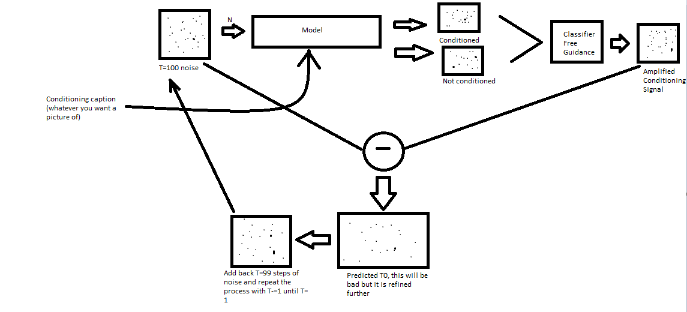

Up
Deep Learning
Overall Idea
The overall idea behind diffusion is to create novel images from a noising/denoising process. This process has four components: a forward noising, backward denoising, conditioning, and classifier-free guidance.
The loop for generating a new image is as follows:
Create a dataset by noising known images in 'n' steps
Train a model to denoise the image given n and conditioning caption
Now novel generation can start. Generate an image of pure noise (I.E T=100 steps of noise)
Pass the noise into the the model twice, once with conditioning caption and once without
Amplify the difference between the two model outputs (classifier free guidance) and subtract noise
The resultant image is the first version T0. Add back noise through T=99 (1 less than above) steps of noising
Repeat noise subtraction process 100 times until a refined T0 is created

Forward noising process HL:
The forward noising process involves adding Gaussian noise to an image in a step by step process. The motivation is to have a controllable function that can x steps of noise to an image, where the amount of noise per step is determined by a scheduler. The backward process can then be trained to undo the noising process
Forward math:
Gaussian noise is added with the following relationship:
$$q(x_t|x_{t-1}) = \mathcal{N}(x_t; \sqrt{1-B_t}x_{t-1}; B_tI)$$
Where B is a noise coefficient. B is confined to the range {0,1}, and varies within that range according to a shedule. An example schedule is a linear schedule, where B varies linearly (e.g between 0.0001 and 0.02) over T=100 steps.
Intuitively, this noising process is slowly adjusting the new mean to be at zero and the new variance to be $$B_t$$
Backward denoising process HL:
Backward math:
Conditioning HL:
Conditioning math:
Classifier-free guidanceHL:
Classifier free guidance math